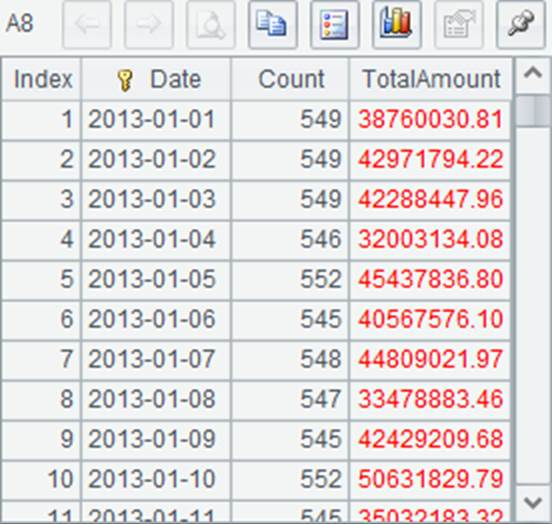
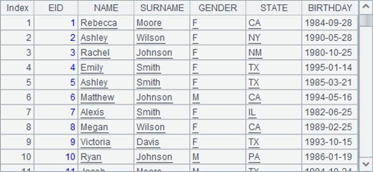
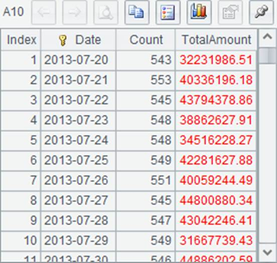
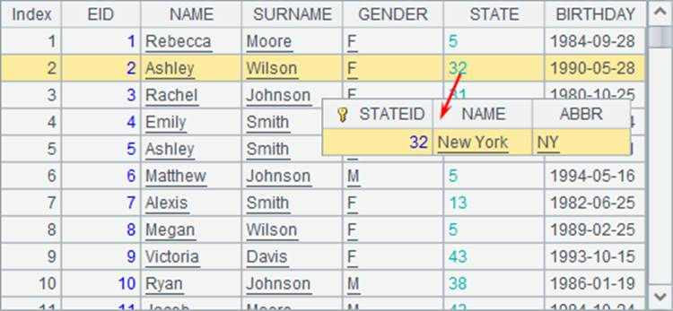

7.3.3 Grouping and aggregation on big result sets
In the above section, each of multiple cursors is first grouped and aggregated to get a series of table sequences ordered by the same value, which then will be merged to get the final result. Similarly, you can deal with grouping and aggregation on big result sets.
The big result set means both the source data for computation and the result set are huge. The huge result set can¡¯t be entirely read into the memory at once, but has to be retrieved step by step. Real-world business cases include the monthly bill of each customer issued by the telecommunication company and the sales of each product on a B2C website. The statistical data of both probably contain more than several millions of records.
esProc provides cs.groupx() function to perform grouping and aggregation over big result sets. Here we take the daily statistic on product orders as the example to illustrate the handling of big result sets. In order to get a more intuitive understanding about the memory limit, 100 records will be retrieved each time. In this case, the groupx function should be used to group and aggregate the daily orders:
|
|
A |
|
1 |
=file("Order_Wines.txt") |
|
2 |
=file("Order_Electronics.txt") |
|
3 |
=file("Order_Foods.txt") |
|
4 |
=file("Order_Books.txt") |
|
5 |
=[A1:A4].(~.cursor@t()) |
|
6 |
=A5.conj() |
|
7 |
=A6.groupx(Date;count(~):Count,sum(round(decimal(Amount),2)):TotalAmount;100) |
|
8 |
=A7.fetch(100) |
|
9 |
=A7.fetch(100) |
|
10 |
=A7.fetch(100) |
|
11 |
=A7.fetch(100) |
A6 concatenates cursors in order without sorting them by Date. A7 groups and aggregates the joined cursor, and returns a cursor instead of a table sequence. Then A8~A11 retrieves data out step by step. Here¡¯re their results:
 
 
In which, each line of A8~A10 retrieves the statistical data of 100 days, and A11 retrieves the rest. After the data in A7¡¯s cursor is completely fetched out, the cursor closes automatically.
A7 performs grouping and aggregation with groupx function while setting the number of buffer rows as 100. The last parameter in A7¡¯s groupx function means that the memory can hold 100 records at most; thus data needs to be buffered when the number of records in the memory reaches 100. In real-time coding, the parameter isn¡¯t needed because esProc will automatically estimate the number of records the available memory can hold to judge whether buffering should be performed or not. Thus, when executed, A7 fetches records from A6¡¯s cursor and meanwhile, summarizes and aggregates them. Once the result of aggregating 100 records is produced, it will be buffered to a temporary file. The rest is done in the same manner. A7¡¯s result is a cursor composed of a group of temporary files:

If the program is executed stepwise, these temporary files can be viewed in the system temporary directory after A7 is executed:

In order to know more about the contents of each of these bin files, you can retrieve data from them, for example:
|
|
A |
|
1 |
=file("temp/tmpdata1372633253707222252").import@b() |
|
2 |
=file("temp/tmpdata2669923936558108709").import@b() |
|
3 |
=file("temp/tmpdata3937021394605697131").import@b() |
|
4 |
=file("temp/tmpdata8767777617311441973").import@b() |
Below are results of A1 and A3:


The names of these temporary files are generated randomly. Judging from the data retrieved from some temporary files, each temporary file stores the result of grouping and aggregating some consecutive original records, and sorts it by Date. In fact, according to the number of buffer rows specified in the function, each temporary file, except for the last one, contains the aggregate data of 100 days. For a cursor generated with groupx, its data will be fetched with fetch by merging all temporary files in a certain order.
After data is fetched out completely from a temporary file cursor or the cursor closes, the corresponding temporary file will be automatically deleted. About the external memory grouping, refer to Methods of External Memory Grouping for Large Result Sets.